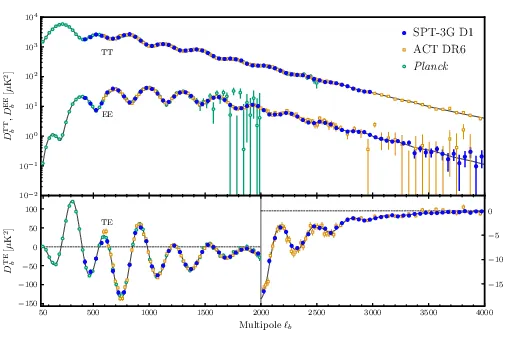
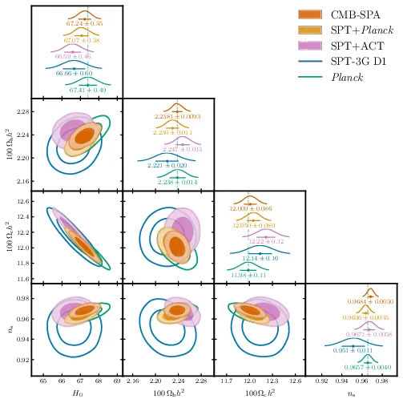
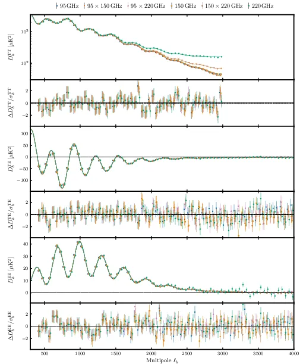
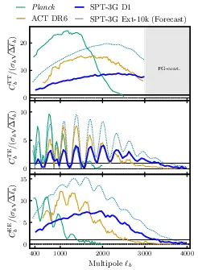
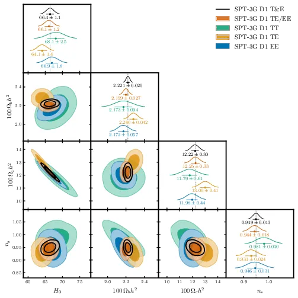
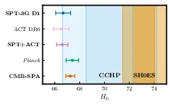
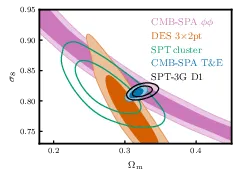
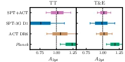
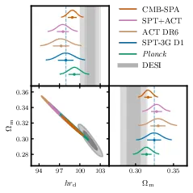
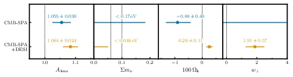

SPT-3G D1: CMB Temperature and Polarization Power Spectra and Cosmology — 图表版¶
- arXiv: 2506.20707
- 作者: Camphuis, Quan, Balkenhol et al. (SPT Collaboration, 2025)
- 阅读日期: 2026-03-16
- 论文规模: 83 页 / 42 图 / 11 表
- 本文精选: 10 张核心图/表
物理背景速查¶
在进入逐图解读之前，先列出贯穿全文的关键物理量和概念。
| 符号 | 名称 | 物理含义 |
|---|---|---|
| \(\Omega_b h^2\) | 重子物质密度 | 控制声学峰的相对高度（奇偶峰比） |
| \(\Omega_c h^2\) | 冷暗物质密度 | 控制物质-辐射等时（equality）的红移，影响峰高和转折尺度 |
| \(\theta_*\) | 声学视角（angular scale of sound horizon） | 最精确的 CMB 参数，锚定峰的位置 |
| \(n_s\) | 原初标量谱指数 | 度量原初扰动功率谱的倾斜，\(n_s < 1\) 意味着红谱（大尺度功率略多） |
| \(\ln(10^{10}A_s)\) | 原初扰动振幅（对数） | 决定功率谱整体归一化 |
| \(\tau_{\rm reio}\) | 再电离光学深度 | 晚期再电离对大角度偏振的抑制，CMB 功率谱振幅 \(\propto A_s e^{-2\tau}\) |
| \(H_0\) | 哈勃常数（推导参数） | 由 \(\theta_*\)、\(\Omega_b h^2\)、\(\Omega_c h^2\) 联合决定 |
| \(\sigma_8\) | 物质密度涨落振幅 | 今天 \(8\,h^{-1}\mathrm{Mpc}\) 球内的均方根质量涨落 |
| \(\Omega_m\) | 物质密度参数 | \(= \Omega_b + \Omega_c + \Omega_\nu\) |
| \(r_{\rm drag}\) | 拖曳期声学视界 | BAO 标准尺，CMB 功率谱峰间距也由它决定 |
| \(A_{\rm lens}\) | 透镜振幅 | 人为缩放引力透镜对功率谱的影响，\(\Lambda\)CDM 预测 \(A_{\rm lens} = 1\) |
| \(h r_d\) | BAO 复合标准尺 | \(\equiv (H_0/100) \times r_{\rm drag}\)，BAO 直接约束的组合量 |
三种谱的直觉： - TT（温度自相关）：信号最强，但高 \(\ell\) 受前景（尘埃、点源、SZ 效应）污染严重。 - TE（温度-偏振交叉）：前景污染极低，在 damping tail 仍保持高信噪比，是 SPT-3G 最有信息量的谱。 - EE（E 模偏振自相关）：前景最干净，但信号比 TT 弱得多；SPT-3G 在 \(\ell > 1800\) 首次成为全球最灵敏。
Fig 1: 三大实验 band powers 对比¶

前因¶
在 Planck 2018 之后，地面实验（ACT DR6、SPT-3G）逐步积累数据，试图在小角度和偏振测量上超越卫星。但三个实验是否一致？SPT-3G 在哪些角尺度上最有优势？这张图直接回答这两个问题。
图/表说什么¶
将 SPT-3G D1（蓝点）、ACT DR6（橙色空心方块）、Planck PR3（绿色空心圆）三个实验的"最小方差"（minimum-variance）band powers 画在一起。上排展示 TT 和 EE 的对数尺度；下排展示 TE 的线性尺度，并在 \(\ell > 2000\) 区域插入放大图。黑色实线是 SPT-3G 数据的 \(\Lambda\)CDM 最佳拟合。
核心信息： 1. 三个完全独立的实验在宽广的 \(\ell\) 范围内高度一致——\(\Lambda\)CDM 的胜利。 2. SPT-3G 在 EE 的 \(\ell = 1800\)–\(4000\) 和 TE 的 \(\ell = 2200\)–\(4000\) 是当前全球最精确的测量。 3. 在 \(\ell < 1000\) 的大角度，Planck 因全天覆盖而占优（宇宙方差更小）。
怎么看¶
- 横轴：多极矩 \(\ell\)（角尺度的倒数；\(\ell \sim 180°/\theta\)）。
- 纵轴：\(D_\ell = \ell(\ell+1)C_\ell / 2\pi\)，单位 \(\mu\mathrm{K}^2\)。对数尺度让声学峰和 damping tail 同时可见。
- 上排 TT：第一声学峰在 \(\ell \approx 220\)（图外），第二、三峰清晰可见。\(\ell > 2000\) 处信号被前景淹没，SPT 因此将 TT 截至 \(\ell = 3000\)。
- 上排 EE：偏振峰位置与 TT 交错（TT 的峰对应 EE 的谷），在 \(\ell \sim 1000\) 附近有最高峰。关键是放大 \(\ell > 1800\) 后可看到 SPT-3G（蓝点）误差棒最短。
- 下排 TE：TE 谱有正有负（物理来源：温度和偏振的相位差），线性尺度才能看到过零点。放大图清楚展示了 SPT-3G 在 \(\ell > 2200\) 的主导地位。
需要理解的物理/公式¶
Band power 的构造（论文 Eq. 37）：
- 原始伪功率谱 \(\bar{C}_\ell\) 减去滤波残差 \(A_\ell\) 和 inpainting 残差 \(I_\ell\)，再除以转移函数 \(F_\ell\)、温度波束 \(B_\ell^T\) 和像素窗函数 \(P_\ell\)。最后用 binning 算符 \(Q_{b\ell}\) 压缩到 \(\Delta\ell = 50\) 的 bin。
最小方差组合：将所有频率组合（\(95\times95\), \(150\times95\), ...）按其协方差矩阵加权合并为单一谱，最大化信噪比。图中展示的就是这个"最终产品"。
后果¶
三大实验一致 → 有充分理由将它们合并为 "CMBall" 数据集，获得迄今最强的 CMB 约束力。SPT-3G 在高 \(\ell\) 偏振上的优势将在后续图表中转化为对宇宙学参数的强约束。
Tab II: \(\Lambda\)CDM 参数约束总表¶
论文 Table II
| 参数 | Planck | SPT-3G D1 | ACT DR6 | Ground | CMBall |
|---|---|---|---|---|---|
| \(10^4\theta_*\) | \(104.184\pm 0.029\) | \(104.171\pm 0.060\) | \(104.157\pm 0.030\) | \(104.158\pm 0.025\) | \(104.162\pm 0.023\) |
| \(100\,\Omega_b h^2\) | \(2.238\pm 0.014\) | \(2.221\pm 0.020\) | \(2.257\pm 0.016\) | \(2.247\pm 0.013\) | \(2.2381\pm 0.0093\) |
| \(100\,\Omega_c h^2\) | \(11.98\pm 0.11\) | \(12.14\pm 0.16\) | \(12.26\pm 0.17\) | \(12.22\pm 0.12\) | \(12.009\pm 0.086\) |
| \(n_s\) | \(0.9657\pm 0.0040\) | \(0.951\pm 0.011\) | \(0.9682\pm 0.0069\) | \(0.9671\pm 0.0058\) | \(0.9684\pm 0.0030\) |
| \(\ln(10^{10}A_s)\) | \(3.042\pm 0.011\) | \(3.054\pm 0.015\) | \(3.038\pm 0.012\) | \(3.042\pm 0.011\) | \(3.0479\pm 0.0099\) |
| \(\tau_{\rm reio}\) | \(0.0535\pm 0.0056\) | \(0.0506\pm 0.0059\) | \(0.0513\pm 0.0060\) | \(0.0514\pm 0.0059\) | \(0.0559\pm 0.0055\) |
| \(H_0\) [km/s/Mpc] | 67.41±0.49 | 66.66±0.60 | 66.51±0.64 | 66.59±0.46 | 67.24±0.35 |
| \(\sigma_8\) | \(0.8099\pm 0.0051\) | \(0.8158\pm 0.0058\) | \(0.8171\pm 0.0055\) | \(0.8169\pm 0.0042\) | \(0.8137\pm 0.0038\) |
| \(\Omega_m\) | \(0.3145\pm 0.0067\) | \(0.3246\pm 0.0091\) | \(0.330\pm 0.010\) | \(0.3277\pm 0.0072\) | \(0.3166\pm 0.0051\) |
| \(r_{\rm drag}\) [Mpc] | \(147.13\pm 0.25\) | \(146.92\pm 0.47\) | \(146.20\pm 0.46\) | \(146.43\pm 0.34\) | \(147.07\pm 0.22\) |
前因¶
\(\Lambda\)CDM 只有 6 个自由参数。将三个 CMB 实验各自独立拟合同一模型，参数是否一致？这是对标准模型最基本的检验。
图/表说什么¶
- 所有参数在 \(1\sigma\) 以内一致——SPT-3G 与 Planck 的参数级一致性为 \(0.4\sigma\)，与 ACT DR6 为 \(1.1\sigma\)。
- SPT-3G 单独约束力已接近 Planck：\(\sigma(H_0) = 0.60\) vs. Planck 的 \(0.49\)，差距仅 22%。
- Ground（SPT+ACT）在 \(H_0\) 和 \(\sigma_8\) 上达到 Planck 精度：\(\sigma(H_0) = 0.46\)（Planck 为 \(0.49\)），这是地面实验首次达到这一里程碑。
- CMBall 是迄今最强的 CMB 约束：\(H_0 = 67.24 \pm 0.35\)。
怎么看¶
- 采样参数（sampled）是 MCMC 直接采样的量，推导参数（derived）是从采样参数计算出来的。
- \(H_0\) 是推导参数：固定 \(\theta_*\) 后，\(H_0\) 由 \(\Omega_b h^2\) 和 \(\Omega_c h^2\) 决定。SPT-3G 的 CMB 透镜数据对打破 \(H_0\) 的简并方向至关重要。
- \(n_s\) 的 SPT 误差较大（0.011 vs. Planck 0.004），因为 \(n_s\) 主要由大角度峰的斜率决定，而 SPT 只覆盖 4% 天区。
- \(\tau_{\rm reio}\) 所有列几乎相同（\(\sim 0.051\)），因为都使用了相同的 Planck PR4 先验。
需要理解的物理/公式¶
\(H_0\) 的推导链：
- \(r_s^*\)：最后散射面的声学视界，由 \(\Omega_b h^2\)、\(\Omega_c h^2\) 决定（通过影响声速和退耦时刻）。
- \(D_A^*\)：到最后散射面的角直径距离，由 \(H_0\)、\(\Omega_m\)、\(\Omega_\Lambda\) 决定。
- 因此 \(\theta_*\)（测量最精确）+ 密度参数 → 唯一确定 \(H_0\)。
后果¶
一致性已确认 → 组合数据集的物理基础成立。\(H_0 \approx 67\) 与 SH0ES 的 \(73.17\) 之间存在 \(6\sigma\) 以上的张力。
Fig 2: \(\Lambda\)CDM 参数三角图¶

前因¶
Tab II 给出了一维数字，但参数之间存在复杂的简并关系（degeneracies）。三角图（triangle plot）是标准的可视化工具，用二维等高线展示参数间的相关性。
图/表说什么¶
对角线：各参数的一维后验分布（1D marginalised posterior），上方标注均值和 \(68\%\) 置信区间。
非对角线：两两参数的二维 \(68\%\) 和 \(95\%\) 置信等高线。颜色编码：SPT-3G D1（蓝）、Planck（绿）、ACT DR6（棕）、Ground（紫）、CMBall（红）。
核心信息：五组等高线高度重叠。CMBall（红）区域最小，代表最强约束。
怎么看¶
- \(\Omega_c h^2\) vs. \(H_0\) 面：负相关。更多暗物质 → 更大 \(\Omega_m\) → 降低 \(H_0\)（以保持 \(\theta_*\) 不变）。等高线的长轴方向就是主简并方向。
- \(n_s\) vs. \(\Omega_b h^2\) 面：正相关。更高 \(\Omega_b h^2\) 增加 Silk 阻尼后的峰高，\(n_s\) 需要调高以补偿。
- \(\Omega_b h^2\) vs. \(H_0\)：微弱正相关。\(\Omega_b h^2\) 增大 → \(r_s^*\) 减小 → 为保持 \(\theta_*\)，\(D_A^*\) 减小 → \(H_0\) 增大。
- 注意 SPT-3G（蓝）在某些面板中的等高线比 Planck（绿）更大，但在 \(H_0\)-\(\Omega_c h^2\) 面大小接近。
需要理解的物理/公式¶
三角图的等高线由 MCMC 采样的后验密度得到。\(68\%\) 等高线包含参数空间中后验密度最高的 \(68\%\) 区域（highest posterior density region）。
后果¶
参数级一致性的视觉确认。三个独立 CMB 实验、不同天区、不同仪器、不同流水线，得到相互重叠的结果——这是 \(\Lambda\)CDM 模型令人印象深刻的成功。
Fig 3: 所有频率组合的 Band Powers 与残差¶

前因¶
Fig 1 展示的是合并后的最小方差 band powers。但原始数据包含 6 种频率组合（\(95\times95\), \(150\times150\), \(220\times220\), \(150\times95\), \(220\times150\), \(220\times95\)）。展示每一种的拟合情况，才能完整验证数据模型的准确性。
图/表说什么¶
大面板：每种频率组合的 TT、TE、EE band powers（数据点）与 \(\Lambda\)CDM + 完整数据模型的最佳拟合（曲线）。不同频率组合有不同的前景贡献（如 \(220\times220\) 的 TT 在高 \(\ell\) 比 \(95\times95\) 高，因为尘埃辐射随频率增强），但模型都能精确匹配。
小面板（残差）：数据减去模型。低 \(\ell\) 残差有相关性（信号主导、宇宙方差限制），高 \(\ell\) 残差趋向随机（噪声主导）。
关键数字：全数据最佳拟合 \(\chi^2 = 1359\)（PTE = 0.52），说明模型对数据的描述极为出色。
怎么看¶
- TT 面板：注意在 \(\ell > 2000\) 处，不同频率的 TT 曲线分叉——这是前景（点源、SZ 效应）的频率依赖性。模型包含了前景项所以仍能很好拟合。
- TE/EE 面板：偏振前景极弱，所有频率的曲线几乎重合。
- 残差面板：如果看到系统性偏离零线的结构，就意味着模型有问题。这里所有残差都与统计期望一致。
需要理解的物理/公式¶
完整数据模型包含 CMB 信号 + 前景 + 系统效应：
前景项包括：射电和红外点源 Poisson 噪声、CIB 聚集、tSZ 效应、kSZ 效应、tSZ×CIB 交叉项。系统效应包括：超级透镜化（super-sample lensing）、绝对标定、波束不确定性、温度到偏振泄漏。
后果¶
PTE = 0.52 是"教科书级"的拟合优度——模型既不过拟合也不欠拟合。这给了我们信心，band powers 中的宇宙学信息是可靠的。
Fig 4: 信噪比（SNR）对比¶

前因¶
"最精确"这个说法需要量化。信噪比（signal-to-noise ratio, SNR）逐 \(\ell\) 展示了不同实验在不同角尺度上的相对灵敏度。
图/表说什么¶
三条实线分别代表 SPT-3G D1（蓝）、Planck（绿）、ACT DR6（橙）的逐 \(\ell\) SNR（已归一到 \(\Delta\ell = 1\)）。蓝色虚线是 SPT-3G 完整巡天（AllSPT，含 Main+Summer+Wide，覆盖 25% 天空）的预测。
三个面板从上到下为 TT、TE、EE。
怎么看¶
- SNR = 1 线（黑色实线）：SNR 降至 1 以下意味着噪声开始主导。
- SPT-3G EE：SNR > 1 直到 \(\ell \lesssim 3300\)。
- SPT-3G TE：SNR > 1 直到 \(\ell \lesssim 3300\)。
- TT：Planck 在 \(\ell < 1500\) 占优（全天观测，宇宙方差小），SPT-3G 在 \(1500 < \ell < 3000\) 有优势但差距不大。注意 SPT 不报告 \(\ell > 3000\) 的 TT，因此那里没有蓝线。
- TE：\(\ell > 2200\) 处 SPT-3G 超过 ACT DR6，在 \(1800 < \ell < 2200\) 两者相当。
- EE：\(\ell > 1800\) 处 SPT-3G 占据绝对优势——这是论文最核心的数据卖点。
- 蓝色虚线：AllSPT 预测将在全 \(\ell\) 范围压倒性超越 Planck 和 ACT。
需要理解的物理/公式¶
SNR 的定义：
其中 \(\sigma(C_\ell)\) 包含宇宙方差和噪声。宇宙方差 \(\propto 1/\sqrt{f_{\rm sky}(2\ell+1)}\)，因此 Planck（\(f_{\rm sky} \sim 0.7\)）在大角度占优。噪声取决于探测器灵敏度和分辨率：SPT-3G 的噪声水平为 \(3.3\,\mu\text{K-arcmin}\)（温度）、\(5.1\,\mu\text{K-arcmin}\)（偏振），远低于 Planck。
后果¶
这张图是 SPT-3G 宣称"最精确偏振测量"的定量依据。它也揭示了 SPT-3G 当前的局限：覆盖天区太小（4%），在大角度被宇宙方差限制。AllSPT 将观测 25% 天空，彻底解决这个问题。
Fig 5: TT vs. TE vs. EE 独立约束对比¶

前因¶
\(\Lambda\)CDM 模型要求 TT、TE、EE 给出一致的宇宙学参数——这是一个非平凡的自洽性检验。同时，比较它们各自的约束力可以揭示哪种谱对 SPT-3G 最有价值。
图/表说什么¶
三角图展示了仅用 TT（黄）、仅用 TE（蓝）、仅用 EE（红）、以及 TTTEEE 组合（黑）的 \(\Lambda\)CDM 参数约束。
核心发现： 1. TT、TE、EE 独立约束之间高度一致（PTE 表显示所有对之间一致性在 \(1.2\sigma\) 以内）。 2. TE 谱的约束力最强——TE 的等高线最窄，接近 TTTEEE 组合。去掉 TT 只轻微放松约束。 3. 这与 Planck（TT 约束力最强）形成鲜明对比，反映了 SPT-3G 的偏振灵敏度优势。
怎么看¶
- 比较各颜色等高线的大小：蓝色（TE）最小 → TE 信息量最大。
- 黄色（TT）等高线相对较大，因为 SPT 的 TT 受限于 \(\ell_{\rm max} = 3000\) 和较小天区。
- 黑色等高线（TTTEEE）与蓝色几乎完全重叠 → 说明 TE 已经主导了联合约束。
需要理解的物理/公式¶
为什么 TE 比 TT 更有信息量？
- 前景更低：TE 谱中前景贡献极小（射电点源和尘埃在偏振中很弱），允许 SPT 使用到 \(\ell = 4000\) 而 TT 只能到 3000。
- damping tail 信息：TE 谱在高 \(\ell\) 的振荡幅度（相对于信号）比 TT 更大，因此对 \(\Omega_b h^2\)、\(n_s\) 等参数的灵敏度更高。
- SPT 噪声优势：偏振噪声 \(5.1\,\mu\text{K-arcmin}\) 使得 TE 在 damping tail 保持高 SNR。
后果¶
TE 作为"最强谱"意味着 SPT-3G 的科学回报主要来自偏振测量能力。这指明了未来实验（SPT-3G AllSPT、CMB-S4）的优化方向：继续提升偏振灵敏度。
Fig 6: \(H_0\) 汇总 — Hubble 张力可视化¶

前因¶
Hubble 张力是当代宇宙学最大的谜题之一：早期宇宙探针（CMB + BAO）给出 \(H_0 \sim 67\)，晚期宇宙的距离阶梯测量（SH0ES）给出 \(H_0 \sim 73\)，差距超过 \(5\sigma\)。SPT-3G 作为新的独立 CMB 实验，能否确认这一张力？
图/表说什么¶
汇总各数据集对 \(H_0\) 的约束，按数据组合排列。加粗标注的是本文结果。
CMB 约束（蓝/紫/绿色区域）： - SPT-3G D1 alone: \(66.66 \pm 0.60\)（距 SH0ES \(6.2\sigma\)） - Ground (SPT+ACT): \(66.59 \pm 0.46\) - CMBall (SPT+ACT+Planck): \(67.24 \pm 0.35\)（距 SH0ES \(6.4\sigma\)）
晚期宇宙测量： - SH0ES: \(73.17 \pm 0.86\)（橙色） - CCHP: \(70.4 \pm 1.9\)（蓝色）
怎么看¶
- 横轴：\(H_0\)（km/s/Mpc），所有 CMB 结果聚集在 \(\sim 67\) 附近，SH0ES 在 \(\sim 73\) 处，中间有明显的"空白地带"。
- 各 CMB 实验的误差棒无论怎么组合都远离 SH0ES。CCHP 的结果位于两组之间，但不确定度较大（\(\pm 1.9\)）。
- 注意 SPT-3G 单独就能以 \(6.2\sigma\) 确认 Hubble 张力——这是以前任何单一地面实验未曾达到的。
需要理解的物理/公式¶
CMB 对 \(H_0\) 的推断完全依赖 \(\Lambda\)CDM 模型。如果新物理改变了 \(r_s^*\)（如 early dark energy 或 modified recombination），CMB 推断的 \(H_0\) 会改变。但本文表明在所有检验过的扩展模型中，CMB 与 SH0ES 的差距都未被完全消除。
张力的统计显著性计算：
SPT-3G alone: \(|66.66 - 73.17| / \sqrt{0.60^2 + 0.86^2} \approx 6.2\sigma\)。
后果¶
SPT-3G 独立确认 Hubble 张力，排除了"张力仅来自 Planck 系统误差"的可能性。三个独立 CMB 实验、不同仪器、不同天区、不同流水线，全部指向 \(H_0 \sim 67\)。
Fig 7: \(\sigma_8\)–\(\Omega_m\) 平面 — \(S_8\) 张力状态¶

前因¶
除了 Hubble 张力，宇宙学中另一个备受关注的可能张力是 \(S_8\) 张力：CMB 预测的宇宙结构增长振幅是否与低红移大尺度结构（LSS）观测一致？
图/表说什么¶
在 \(\Omega_m\)–\(\sigma_8\) 平面上展示： - SPT-3G D1（黑色）和 CMBall primary（蓝色）：CMB 约束 - CMB lensing 联合（粉色，SPT+ACT+Planck lensing） - DES-Y3 3×2pt（橙色）：星系弱引力透镜 + 星系聚集 - SPT 星系团（绿色）
核心信息：所有探针在 \(2\sigma\) 以内一致！\(S_8\) 张力正在缓解。
怎么看¶
- 不同探针的简并方向不同（等高线长轴的斜率不同），这反映了各自对 \(S_8^\alpha = \sigma_8(\Omega_m/0.3)^\alpha\) 的灵敏度差异（\(\alpha\) 不同）。
- CMB 等高线（黑、蓝）沿 \(\sigma_8 \propto \Omega_m^{-0.25}\) 方向延伸。
- DES-Y3（橙）沿 \(\sigma_8 \propto \Omega_m^{-0.5}\) 方向延伸。
- 尽管方向不同，等高线在 \(\Omega_m \sim 0.3\)、\(\sigma_8 \sim 0.81\) 附近交汇。
- 论文报告 CMBall primary 与 DES-Y3 一致性为 \(1.8\sigma\)，与 KiDS 最新结果一致性为 \(0.86\sigma\)。
需要理解的物理/公式¶
\(S_8\) 的定义：
更一般地，\(S_8^\alpha = \sigma_8 (\Omega_m/0.3)^\alpha\)，其中 \(\alpha\) 取决于特定探针。
CMB 约束 \(\sigma_8\) 的途径：原初振幅 \(A_s\) + 引力透镜 + 物质密度 → \(\sigma_8\)。
LSS 约束 \(S_8\) 的途径：星系形状的微小形变（cosmic shear）统计量直接测量前景物质分布的功率。
后果¶
\(S_8\) 张力的缓解意味着 \(\Lambda\)CDM 在描述结构增长方面依然成功。但更精确的未来数据（Rubin/LSST、Euclid）将对此做更严格的检验。
Fig 8: \(A_{\rm lens}\) 参数 — 透镜异常检验¶

前因¶
Planck 的 TT 数据长期显示一个 \(2\)–\(3\sigma\) 的 \(A_{\rm lens} > 1\) 异常：引力透镜对功率谱的"平滑"效应似乎比 \(\Lambda\)CDM 预测的更强。这可能暗示新物理，也可能是统计涨落或系统误差。地面实验能否提供独立判据？
图/表说什么¶
左侧面板：仅用 TT 数据的 \(A_{\rm 2pt}\)（引力透镜对 primary CMB 功率谱的影响幅度）后验。
右侧面板：使用 T&E 数据。
表格：各数据集的 \(68\%\) 置信区间。
核心结论： - Planck TT: \(A_{\rm 2pt} = 1.239 \pm 0.095\)（\(\sim 2.5\sigma\) 偏离 1） - Planck T&E: \(A_{\rm 2pt} = 1.185 \pm 0.067\)（\(\sim 2.8\sigma\)） - Ground TT: \(A_{\rm 2pt} = 1.014 \pm 0.098\)（与 1 完美一致） - Ground T&E: \(A_{\rm 2pt} = 1.016^{+0.048}_{-0.054}\)（与 1 完美一致）
怎么看¶
- 虚线标注 \(A_{\rm lens} = 1\)（\(\Lambda\)CDM 预测）。
- Planck（绿色）的后验明显偏向右侧（\(> 1\)）。
- Ground（紫色）的后验精确地以 1 为中心。
- SPT-3G alone（蓝色）在仅用 TT 时有较大误差（天区小），但加入偏振后约束大幅收紧并趋向 1。
- Ground 的 TT 结果与 Planck TT 结果相差 \(\sim 2.3\sigma\)，暗示 Planck 的 \(A_{\rm lens}\) 异常可能不是宇宙学信号。
需要理解的物理/公式¶
\(A_{\rm lens}\)（论文中区分为 \(A_{\rm 2pt}\) 和 \(A_{\rm recon}\)）的作用：
引力透镜使 CMB 功率谱的声学峰变平滑（高峰降低、低谷填高）。\(A_{\rm lens} > 1\) 意味着"平滑过度"。
为什么 Planck TT 看到 \(A_{\rm lens} > 1\)？ 可能的解释包括：(1) Planck TT 高 \(\ell\) 数据中的统计涨落；(2) Planck 数据处理中的残余系统效应。PR4 和 CamSpec 重分析显示此异常有所降低。
后果¶
Ground 数据与 \(A_{\rm lens} = 1\) 的一致性，使 Planck 异常更可能是统计涨落或系统效应。但加入 DESI BAO 后情况有趣的变化：CMBall+DESI 得到 \(A_{\rm lens} = 1.084 \pm 0.024\)（\(3.5\sigma\)），这是 CMB 与 BAO 在 \(\Lambda\)CDM 中张力的一个"投影"，而非 CMB 内部的异常。
Fig 9: \(\Omega_m\)–\(hr_d\) 平面 — CMB vs. DESI BAO 的 \(2.8\sigma\) 张力¶

前因¶
DESI DR2 的 BAO 测量是 2025 年宇宙学最重要的新数据之一。BAO 直接约束的是 \(\Omega_m\) 和 \(hr_d\)——这恰好也是 CMB 在 \(\Lambda\)CDM 下能精确推断的参数。两者一致吗？
图/表说什么¶
上方：\(\Omega_m\)–\(hr_d\) 平面的二维等高线。DESI（灰色填充）偏好更低的 \(\Omega_m\)、更高的 \(hr_d\)。各种 CMB 组合（SPT, Planck, ACT, Ground, CMBall）的等高线都偏向更高的 \(\Omega_m\)、更低的 \(hr_d\)。
下方表格：量化张力程度。CMBall 与 DESI 之间的差异为 \(2.8\sigma\)。Ground 与 DESI 的差异更大：\(3.7\sigma\)。
怎么看¶
- DESI 等高线（灰色）和 CMB 等高线（彩色）之间有清晰的位移——它们不重叠。
- 所有 CMB 数据集都趋向右下方（高 \(\Omega_m\)，低 \(hr_d\)），DESI 趋向左上方。
- 注意 CMBall（红色）相比 Ground（紫色）稍微向 DESI 靠近，因为 Planck 大角度数据偏好略低的 \(\Omega_m\)。
- \(2.8\sigma\) 介于"有趣"和"显著"之间——还不足以宣布新物理，但足以引起警觉。
需要理解的物理/公式¶
\(hr_d\) 的物理含义：
BAO 测量的是 \(r_d / D_V(z)\) 或 \(r_d \cdot H(z)\)，其中 \(D_V\) 是体积平均距离。结合多个红移 bin → 约束 \(\Omega_m\) 和 \(hr_d\)。
CMB 独立推断 \(r_d\)（由声速积分决定）和 \(H_0\)（通过 \(\theta_*\)），因此也约束 \(hr_d\)。
为什么会有张力？ 在 \(\Lambda\)CDM 中，CMB 和 BAO 对 \(\Omega_m\) 和 \(hr_d\) 的约束应该完全一致。不一致意味着：(1) 统计涨落；(2) 系统误差；(3) \(\Lambda\)CDM 不完整。
后果¶
这个 \(2.8\sigma\) 张力是本文"超越 \(\Lambda\)CDM 搜索"的出发点。后续所有扩展模型（\(A_{\rm lens}\)、\(N_{\rm eff}\)、\(\Omega_k\)、\(w_0w_a\)、\(\sum m_\nu\)）都可以理解为：模型打开了额外的自由度，使 CMB 的 \(\Omega_m\)–\(hr_d\) 等高线能"伸展"到与 DESI 重叠的区域。
Fig 10: 扩展模型总结 — CMBall vs. CMBall+DESI¶

前因¶
前面已经看到 \(\Lambda\)CDM 下 CMB 与 DESI 存在 \(2.8\sigma\) 张力。如果允许模型扩展（增加自由参数），联合拟合会偏好偏离标准模型吗？
图/表说什么¶
四个面板从左到右展示四个扩展参数：\(A_{\rm lens}\)、\(\sum m_\nu\)、\(\Omega_k\)、\(w_\perp\)（将 \(w_0\)-\(w_a\) 沿 DESI 简并方向压缩为一个数）。
上排（蓝色）：仅用 CMBall 的约束。 下排（橙色）：CMBall + DESI 的约束。
虚线标注 \(\Lambda\)CDM 的预期值（\(A_{\rm lens}=1\)、\(\sum m_\nu \geq 0.06\,\text{eV}\)、\(\Omega_k=0\)、\(w_\perp=0\)）。
核心发现： - CMBall alone（蓝色）在所有扩展参数上与 \(\Lambda\)CDM 一致。 - CMBall + DESI（橙色）在每个扩展参数上都发生偏移，偏离 \(\Lambda\)CDM \(2\)–\(3\sigma\)。
怎么看¶
- \(A_{\rm lens}\) 面板：CMBall 给 \(1.055 \pm 0.030\)（\(1.8\sigma\)），加 DESI 后变为 \(1.084 \pm 0.024\)（\(3.5\sigma\)）。
- \(\sum m_\nu\) 面板：CMBall 给上限 \(< 0.17\,\text{eV}\)（\(95\%\)），加 DESI 后被挤到 \(< 0.048\,\text{eV}\)——低于中微子振荡的最小质量（\(0.06\,\text{eV}\) for NH），这在物理上令人不安。
- \(\Omega_k\) 面板：CMBall 与零一致，加 DESI 后偏向正值 \(0.26 \pm 0.11\)（\(2.4\sigma\)），暗示"开放宇宙"。
- \(w_\perp\) 面板：CMB alone 无法约束暗能量演化（蓝色水平线），但 CMBall+DESI 给出 \(1.91 \pm 0.57\)（\(3.4\sigma\) 偏离零），暗示暗能量状态方程 \(w(z)\) 偏离 \(-1\)。
需要理解的物理/公式¶
\(w_\perp\) 的定义（论文 Eq. 68）：
这是沿 DESI 数据在 \(w_0\)–\(w_a\) 平面的主简并方向的投影。\(w_\perp = 0\) 对应 \(\Lambda\)CDM（\(w_0 = -1\), \(w_a = 0\)），\(w_\perp > 0\) 对应 \(w_0 > -1\)、\(w_a < 0\) 的暗能量演化。
\(\chi^2\) 改善量（论文 Table IX）——扣除额外自由度后转换为等效高斯显著性： | 模型 | \(\Delta\chi^2\)（CMBall+DESI vs. \(\Lambda\)CDM） | 额外参数 | 等效显著性 | |------|------|------|------| | \(A_{\rm lens}\) | 9.5 | 1 | \(3.1\sigma\) | | \(\Omega_k\) | 6.3 | 1 | \(2.5\sigma\) | | \(\sum m_\nu\) | 7.8 | 1 | \(2.8\sigma\) | | \(w_0 w_a\) | 13.5 | 2 | \(3.2\sigma\) |
后果¶
这是全文最具前瞻性的图。它传达的信息是：\(\Lambda\)CDM 仍然没有被单一探针推翻，但 CMB 与 BAO 的联合分析在多个扩展方向上一致地看到 \(2\)–\(3\sigma\) 的偏移。 这些信号可能是统计涨落（毕竟只有 \(\sim 3\sigma\)），也可能是新物理的第一缕曙光。未来的 DESI DR3、CMB-S4、SPT-3G AllSPT 将给出答案。
全文图表逻辑链¶
下面用一条链条串联 10 张核心图/表的论证逻辑：
[Fig 3: 全频 band powers + 残差]
↓ 验证数据质量（PTE = 0.52）
[Fig 4: SNR 对比]
↓ 定量确认 SPT-3G 在 TE/EE 高ℓ 最灵敏
[Fig 1: 三大实验 band powers 对比]
↓ 三个实验高度一致 → 有理由组合
[Fig 5: TT vs TE vs EE 独立约束]
↓ SPT-3G 的约束主要由 TE 驱动，ΛCDM 内部自洽
[Tab II: ΛCDM 参数表]
↓ 量化参数约束：SPT ≈ Planck，Ground ≥ Planck，CMBall 最强
[Fig 2: ΛCDM 三角图]
↓ 参数级一致性的视觉确认
[Fig 6: H₀ 汇总]
↓ 所有 CMB → H₀ ≈ 67，与 SH0ES ≈ 73 差 6σ+ → Hubble 张力确认
[Fig 7: σ₈-Ω_m 平面]
↓ CMB 与 LSS 在结构增长上一致 → S₈ 张力缓解
[Fig 8: A_lens]
↓ Ground 数据无 lensing 异常 → Planck 异常可能非宇宙学信号
[Fig 9: Ω_m-hr_d 平面]
↓ CMB 与 DESI BAO 之间 2.8σ 张力 → 驱动扩展模型搜索
[Fig 10: 扩展模型总结]
↓ CMB alone 不偏好超越 ΛCDM，但 +DESI → 多方向 2-3σ 偏移
全链条的叙事：SPT-3G 的深度偏振数据 → 通过严格验证 → 确认 \(\Lambda\)CDM 在 CMB 内部完全自洽 → 独立确认 Hubble 张力 → 缓解 \(S_8\) 张力 → 消除 Planck 透镜异常 → 但发现 CMB 与 DESI BAO 出现新的 \(2.8\sigma\) 张力 → 在扩展模型中体现为 \(2\)–\(3\sigma\) 的偏离标准模型信号。
总结¶
SPT-3G D1 的三个核心成就¶
-
偏振测量达到全球最灵敏：在 EE 的 \(\ell = 1800\)–\(4000\) 和 TE 的 \(\ell = 2200\)–\(4000\)，SPT-3G 的误差棒是三大实验中最小的。TE 谱成为 SPT-3G 最有信息量的通道。
-
地面实验首次匹敌 Planck：Ground（SPT+ACT）在 \(H_0\)、\(\sigma_8\) 上的约束精度达到或超过 Planck 卫星。CMBall 组合给出 CMB 迄今最强的宇宙学约束：\(H_0 = 67.24 \pm 0.35\)、\(\sigma_8 = 0.8137 \pm 0.0038\)。
-
发现 CMB-BAO 新张力：CMBall 与 DESI DR2 在 \(\Lambda\)CDM 下差异 \(2.8\sigma\)。虽不足以宣布新物理发现，但在 \(A_{\rm lens}\)、\(\Omega_k\)、\(w_0w_a\)、\(\sum m_\nu\) 多个扩展方向一致出现 \(2\)–\(3\sigma\) 偏移——这是未来需要密切关注的方向。
未解决的问题¶
- Hubble 张力：\(6.4\sigma\)（CMBall vs. SH0ES），所有检验过的扩展模型（modified recombination + curvature 可降至 \(1.9\sigma\)，但以牺牲模型简洁性为代价）均未完全消解。
- CMB vs. DESI：\(2.8\sigma\) 是统计涨落还是新物理？需要 DESI DR3 和 SPT-3G AllSPT 的更高精度数据来判断。
- 中微子质量：CMBall+DESI 给出 \(\sum m_\nu < 0.048\,\text{eV}\)（95% CL），低于正常序列最小值 \(0.06\,\text{eV}\)——与粒子物理实验矛盾，可能反映了 CMB-BAO 张力的投影。
- 偏振波束的独立标定：论文指出，EE 谱的约束力受限于偏振波束（polarized beam）的不确定性；如果能从外部精确标定波束，EE 的约束将进一步收紧。
展望¶
SPT-3G 还有大量数据尚未使用：Summer fields（\(2600\,\text{deg}^2\)）分析已接近完成，2024 年的 Wide Survey（\(6000\,\text{deg}^2\)）正在分析中。AllSPT 将覆盖 25% 天空、\(\sim 10000\,\text{deg}^2\)，彻底消除宇宙方差限制，并在信噪比上全面超越 Planck。再加上 CMB-S4 在 2030 年代的部署，地面 CMB 实验将主导宇宙学的下一个十年。